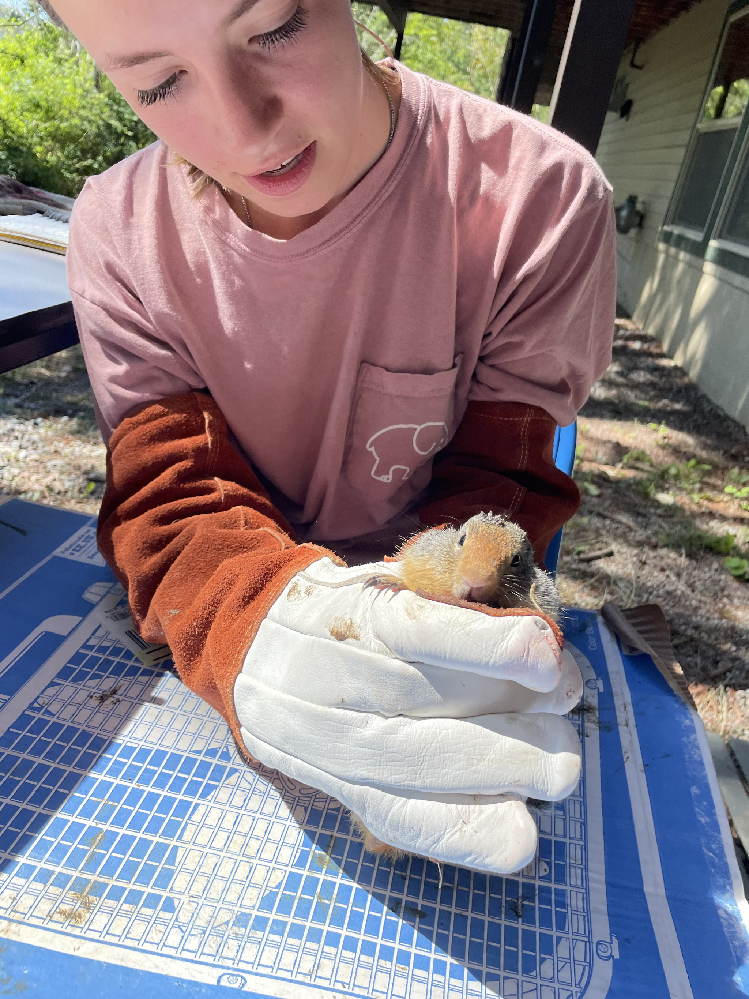
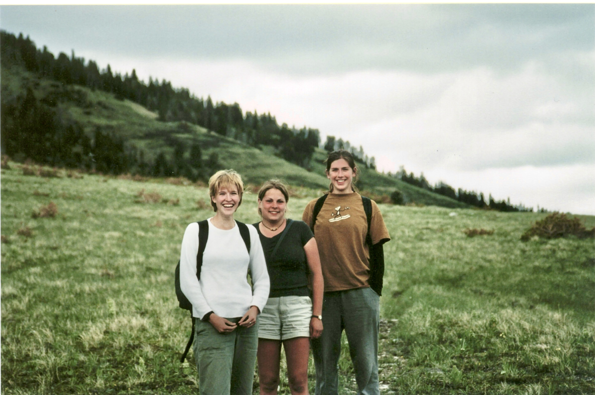
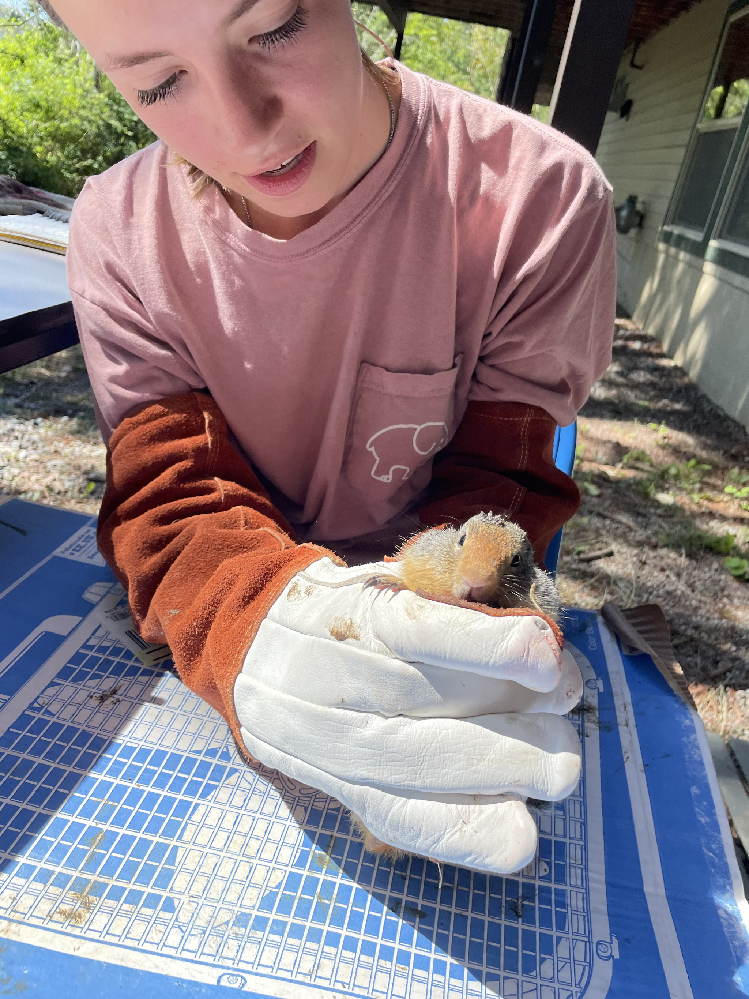
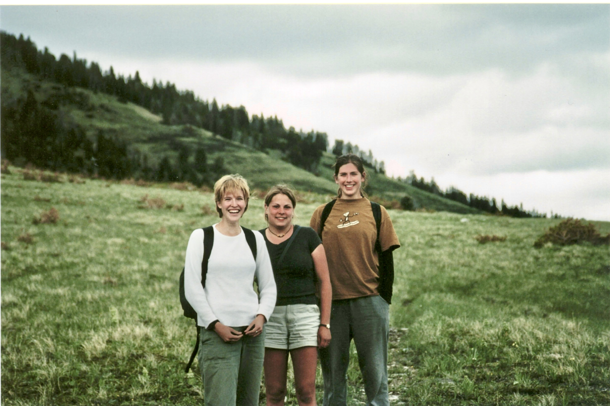

I first came to the Flathead Lake Biological Station in 1980, when I took my first serious course in animal behavior, taught by Alan W. Stokes of Utah State University. Alan was a widely respected animal behaviorist who taught at the station for many summers, with his wife Alice Stokes by his side, and that course absolutely marked the beginning of what became a long-term research program on the sexual selection system of the Sierra dome spider—work that continues to this day.
My doctoral work on the Sierra dome spider was completed in 1988 at Cornell University's Section of NB&B under the supervision of S.T. Emlen and P.W. Sherman, over the course of 6.5 wonderful years.
In 1994, after several fantastic postdoc years with Randy Thornhill and William D. Hamilton, I began teaching Field Studies in the Evolution of Animal Behavior at the station. Over the years that followed, the course was offered roughly every other summer, concluding with its final offering in 2025.
I am deeply grateful to the Biostation for the priviledge of following in Allen W. Stokes footsteps, teaching my animal behavior course. Thanks also to all my brilliant and generous mentors.
I am equally grateful to the scores of fine students who chose to spend their summers working with me at the Biostation — they added more to my life than they could possibly realize at the time.
Wild Horse Island, Flathead Lake.

 




Higher than my expectations
Ah! Well, I have really good days.
— Ray Wylie Hubbard (song: "Mother Blues")